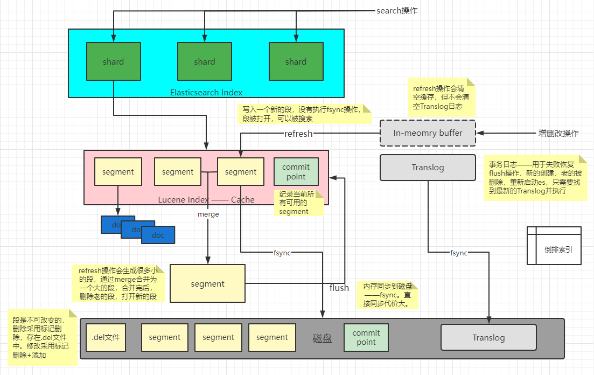

# 一、介绍
分布式文档存储，采用 JSON 文档
-
集群中多个节点，文档分布在整个集群，任何节点可以访问文档。
-
存储文档后，近实时地编入索引并完成搜索。
-
倒排索引。支持全文搜索、精确搜索等
-
无模式的能力（不明确字段类型的情况，映射为合适的类型）
-
可拓展性和弹性（集群 -> 节点 -> 分片、索引）
- 主分片和副本分片
- 主分片创建时固定，副本分片可以随身更改
# 其他
# 快捷键
ctrl + i：格式化代码ctrl + enter：运行代码
# 二、安装和配置 ES
ES + kibana + plugins
待补充
# 各配置项
- 单个分片的最大文档数：
2^32-1（约 20 亿）。官方建议分片的大小控制在30GB - 50GB
# 三、API
# 1. 集群（cluster）
# 1.1、集群查询（address /_local）
1 | GET /_nodes/_local |
# 1.2、检索当前 hot thread 的节点信息
1 | GET /_nodes/hot_threads |
# 2. 索引（index）
# 2.1、创建索引
使用 PUT 方式或者 POST 添加（索引不存在会自动创建索引）
settting：index 的配置项mappings：设置文档的字段类型aliases：为索引添加别名
1 | PUT {index} |
# 2.2、Dynamic Mapping
对于文档中未定义的字段，可以通过动态映射来定义是否动态添加。
类型通过字段的值动态推算，需要注意的几个：
JSON DataType |
Elasticsearch datatype |
|---|---|
| integer | long |
| array | 第一个非空的 value 的类型数组 |
| string | text |
| 浮点数 | float |
dynamic：是否开启 动态 Mapping（false、true、7 + 版本添加 runtime）date_detection：是否开启 date 类型转换dynamic_date_formats：动态将字符串转为 date 类型，这样只有这种格式会转换为 date 类型
1 | PUT my_index |
# Runtime Fields 和 Script Fields
-
Runtime Fields：运行时字段，可以用于聚合、排序等操作，查询时效率会略微降低（字段值运行时计算），减少磁盘的存储（不被存储和索引）。
试用场景：日志
1
2
3
4
5
6
7
8
9
10
11
12
13
14
15
16
17
18
19
20PUT students/_mapping
{
"runtime": {
"score_flag": {
"type": "keyword",
"script": {
"source": "if (doc['score'].value > 90) emit('A'); else if(doc['score'].value > 75) emit('B'); else if(doc['score'].value > 60) return emit('C'); else emit('D');"
}
}
}
}
GET students/_search
{
// 不设置该属性查询时不会显示运行时字段
"fields" : ["*"],
"query": {
"match_all": {}
}
}
-
Script Fields：脚本字段，不可用于聚合等操作，数据查询时进行操作。
1
2
3
4
5
6
7
8
9
10
11
12
13
14POST students/_search
{
"query": {
"match_all": {}
},
"script_fields": {
"score_flag": {
"script": {
"lang": "painless",
"source": "if (doc['score'].value > 90) return 'A'; else if(doc['score'].value > 75) return 'B'; else if(doc['score'].value > 60) return 'C'; else return 'D';"
}
}
}
}
# 2.3、查询索引
# 查询索引是否存在
1 | head /customer |
# 表格形式返回索引信息
1 | GET /_cat/indices |
# 2.4、打开和关闭索引
- 关闭索引：只显示元数据，不能够读写数据
- 打开索引：允许读写（正常操作）
# 2.5、索引生命周期和滚动索引（rollover）
滚动索引是
5.X之后推出的 API，解决以日期作为索引名称大小不均匀的问题
索引的生命周期（ILM）和 冷热架构
- 热接点（Hot）：用户最关心的热数据
- 温节点（Warm）：存放前一段时间沉淀的热数据
- 冷接点（Cold）：用户不太关心的数据，或者很久前的数据
frozendelete
磁盘数据不足时优先删除冷接点数据，硬件资源不足时，热接点优先使用 SSD
1 | PUT my-index-2021.12.27-000001 |
需要注意配置索引的别名时，必须配置 is_write_index:true ，rollover 只能用于 alias 和 data stream ，索引名也需要设置为 *-00001 类似的格式，这样 rollover 的时候索引名可以累加，否则会报错。
上述配置中，当索引满足任意一个条件都会生成新的索引（时间间隔超过 7 天 或 最大文档超过 100 个 或 文档总大小超过 5GB）
# 2.6、冻结或解除索引（freeze）
冻结索引后，当前索引不占用内存空间，只占用磁盘。索引可以被查询（效率较低），通常使用在快速缓解集群内存使用率过高的情况导致的熔断上。
1 | POST {index_name}/_freeze |
# 2.7、重构索引（ reindex ）
常用在字段类型变更、分片数量变更、迁移索引等场景。
reindex执行过程中索引需要停止写入，否则会出现数据不一致的问题，如果索引数据量较大，需要添加wait_for_completion=false，这样调用Reindex API时就异步执行并返回一个taskId。我们可以通过该taskId来查看reindex状态甚至取消该 task
1 | POST _reindex |
# 3. 文档（doc）
# 3.1、创建和修改文档
# 3.1.1）创建修改单个文档（通过 id 查找）
使用 POST 和 PUT 的方式添加或者修改文档，与 POST 的 _update 不同的是，如果文档已经存在，覆盖文档，而不会修改文档对应的字段
1 | POST {index}/_doc/{id} |
# 3.1.2）query 形式修改文档
待补充
# 3.1.3）批量操作文档（_bulk）
支持批量覆盖、删除、添加和部分字段修改
1 | POST {index}/_bulk?refresh |
# 3.2、搜索文档
# 3.2.1） _search 搜索
1 | GET {index}/_search |
took：执行时间（毫秒）time_out：请求是否超时_shards：分片总数、成功、失败、跳过max_score：最相关文档的总数hits：命中
query
-
wildcard query（查询速度可能会较慢，尽量防止通配符出现在开头位置）1
2
3
4
5
6
7{
"query": {
"wildcard": {
"name": "test*"
}
}
}- 通配符 * ：类似 MySQL【
where field like 'test%'】 - 通配符？：类似 MySQL【
where field like 'test_'】
- 通配符 * ：类似 MySQL【
-
prefix query1
2
3
4
5
6
7{
"query": {
"prefix": {
"name": "test"
}
}
}等价于
"wildcard": {"name": "test*"} -
fuzzy query模糊查询使用基于 Levenshtein 编辑距离的相似度，用于查询误拼写的 fuzzy 模糊搜索技术。
1
2
3
4
5
6
7
8
9
10
11
12{
"query": {
"fuzzy" : {
"name": {
"value": "test",
"fuzziness": 1,
"prefix_length": 1,
"max_expansions": 100
}
}
}
}- fuzziness：最大编辑距离【一个字符串变成另一个字符串的需要操作的步数】。默认为 AUTO
- prefix_length：不会被初始化的字符串。默认为 0
- max_expansions：控制与前缀匹配的词的数量。默认为 50
- transpositions：是否支持模糊转置（ab → ba）。默认为 false
-
boolean querymust：查询条件必须出现在文档中，并计算分数。使用match_all返回全部，score 全部为 1.0filter：与 must 类似。但不计算分数，同时 filter 的计算结果可以缓存should：查询条件应该出现在文档，并计算分数。通过minimum_should_match设置满足 should 几个条件，当设置为 0 时，可以不满足任何 should 也可以被查询must_not：查询条件必须不出现在文档，不会计算分数，结果可以被缓存
-
boosting query
# 3.2.2）获取索引相关的统计数据
1 | GET /school/_stats |
# 3.2.3）分页搜索
-
From + Size 查询
- from：未指定，默认为 0，指第一个数据的 index（与传统的第几页不同）
- size：未指定，默认为 10
1
2
3
4
5
6
7
8GET students/_search
{
"from": 1,
"size": 2,
"query": {
"match_all": {}
}
}优点：支持随机翻页
缺点：
- 受制于
max_result_window的设置（from + size < max_result_window），不能无限翻页，默认为 10000。 - 存在深度翻页的问题（from 前面的数据也会查出），越往后翻页越慢。
搜素一般会跨越分片进行搜索，每个分片必须将其请求的命中内容以及任何先前页面的命中内容加载到内存（将 from + size 的文档加载到内存）。大量消耗内存和 CPU 使用率。
-
search_after 查询（推荐使用）
使用前一页的一组排序来检索下一页的排序
前置条件：使用 search_after 要求后续的多个请求返回与第一次查询相同的排序结果序列。也就是说，即便在后续翻页的过程中，可能会有新数据写入等操作，但这些操作不会对原有结果集构成影响。
实现：创建一个 Point in Time（PIT，类似快照的方式，在 7.10 之后才有的新特性）
1
POST students/_pit?keep_alive=1m
1
2
3
4
5
6
7
8
9
10POST _search
{
"track_total_hits": true,
"query": {
"match_all": {}
},
"pit": {
"id": "xxx"
}
}keep_alive 过期是报错而不是重新创建新的 PIT？
返回的 sort，第一个字段表示排序方式，以某个字段升序或者降序排序的意思；第二个字段为 tiebreaker（参考官方文档）
缺点：只支持向后翻页
-
scroll
适用于遍历查询，搜索大量结果甚至于所有结果
搜索时创建一个快照
1
2
3
4
5
6
7
8
9
10
11
12
13POST students/_search?scroll=3m
{
"size": 100,
"query": {
"match_all": {}
}
}
POST _search/scroll
{
"scroll" : "3m",
"scroll_id":"xxx"
}非实时的响应，同时快照需要消耗大量堆内存
# 3.3、聚合分析
底层使用倒排索引 + 正排索引（参考四 - 2 和 3）
aggs → name（自定义）→ type（histogram、terms 等）→ 聚合字典、其他信息
# 3.3.1）bucket aggregations（桶聚合）
# 3.3.2）histogram aggregations（直方图统计）
根据指定的间隔构造存储桶。值应该放入哪个桶？向下舍入最接近的间隔存储桶
bucket_key = Math.floor((value - offset) / interval) * interval + offset
时间间隔必须为正十进制数，而偏移量必须为 [0，offset] 范围内的十进制
1 | POST students/_search |
# 3.3.3）Terms aggregations（术语聚合）
搜索指定字段的唯一值构建存储桶。
1 | GET students/_search |
# 3.4、数据类型（dataType）
# 3.4.1）Nested dataType & Object dataType
arrays of objects can be indexed
主要用于查询某个对象或者对象数组字段下的某个字段值
username 使用 Object dataType，cources 使用 nested dataType
1 | PUT students2000 |
查询
1 | GET students2000/_search |
# 4. 模板（template）
# 4.1、Dynamic template
1 | PUT my_index |
# 5、管道（pipeline）
# 6、别名（Alias）
一个索引是一组数据流或者 index 的别名，可以在任何时刻替换数据流或 index
1 | POST _aliases |
# 7、缓存（Cache）
# 7.1、API
# 7.1.1）清除缓存
1 | POST /_cache/clear |
缓存应用场景
| 缓存类型 | 缓存内容 |
|---|---|
| 节点请求缓存 | 缓存可维护在 filter 上下文中使用的查询结果。 |
| 分片请求缓存 | 缓存 size = 0 时频繁使用的查询的结果，尤其是聚合的结果。 |
| 字段请求缓存 （Field data） | 用于排序和支持某些字段类型上的聚合。 |
# 7.1.2）禁用或启用缓存
1 | PUT {index} |
# 7.1.3）全局查询缓存
1 | GET _cat/nodes?v&h=id,queryCacheMemory,queryCacheEvictions,requestCacheMemory,requestCacheHitCount,requestCacheMissCount,flushTotal,flushTotalTime |
# 7.2、节点查询缓存
Filter或者Term查询的结果进行缓存，节点的所有分片共享，使用LRU策略
默认情况下，节点查询缓存最多容纳 10000 个查询，占总堆空间的 10%
# 8、Text analysis
# 8.1、概念（concept）
# 8.1、词干（Stemmer）
查询时词干分析将单词还原为词根，两个具有相同词根的不同单词可以搜索出来（例： working 和 worked ）
stemmer token filters
# 8.2、token graph
- position：每个词（token）的位置
- position length：词（token）跨域的间距
相似语句【synonyms】（例：fast car 和 quick car）
Multi-position tokens （例：简称，domain name system 和 dns）
# Tokenization
将一个 text 拆分成更小的块。大部分情况下这些 token 都是一个独立的单词。
text： the quick brown fox jumps ，查询语句 quick fox
匹配查询中独立的一些词
# Normalization
匹配近似语义的词
- 大小写：big、Big
- 前后缀
# 四、底层原理
# 1、文档的创建
- doc 写入到 in-memory buffer，同时将操作写入到 Translog（应该是在硬盘，防止系统中断等操作导致内存丢失，通过 Translog 复原数据）
- 每隔一秒执行 refresh 操作：将 in-memory buffer 的数据写入到 segment（内存，查询时轮询分片的所有 segment，segment 太多会导致查询效率降低，es 会自动合并 segment 到一个大的 segment，等到大的 segment 被写入磁盘，删除所有小的 segment）
- 每隔 30 分钟执行一次 fresh 操作（或者 Translog 太大）：将 segment 的数据存入到磁盘
Translog ：默认 5 秒加载被 fsync 加载到硬盘，或者每次写请求完成后也会执行（index、update、bulk 等）。这个过程在主分片和副本分片都会发生，因此需要等到所有操作都执行完成后才会执行 200 OK 的响应

# 2、倒排索引
# 3、正排索引
# 4、Lucene 文件与数据压缩
| Name | Extension | Brief Description |
|---|---|---|
| Segment Info | .si | segment 的元数据文件 |
| Compound File | .cfs, .cfe | 一个 segment 包含了如下表的各个文件，为减少打开文件的数量，在 segment 小的时候，segment 的所有文件内容都保存在 cfs 文件中，cfe 文件保存了 lucene 各文件在 cfs 文件的位置信息 |
| Fields | .fnm | 保存了 fields 的相关信息 |
| Field Index | .fdx | 正排存储文件的元数据信息 |
| Field Data | .fdt | 存储了正排存储数据，写入的原文存储在这 |
| Term Dictionary | .tim | 倒排索引的元数据信息 |
| Term Index | .tip | 倒排索引文件，存储了所有的倒排索引数据 |
| Frequencies | .doc | 保存了每个 term 的 doc id 列表和 term 在 doc 中的词频 |
| Positions | .pos | Stores position information about where a term occurs in the index 全文索引的字段，会有该文件，保存了 term 在 doc 中的位置 |
| Payloads | .pay | Stores additional per-position metadata information such as character offsets and user payloads 全文索引的字段，使用了一些像 payloads 的高级特性会有该文件，保存了 term 在 doc 中的一些高级特性 |
| Norms | .nvd, .nvm | 文件保存索引字段加权数据 |
| Per-Document Values | .dvd, .dvm | lucene 的 docvalues 文件，即数据的列式存储，用作聚合和排序 |
| Term Vector Data | .tvx, .tvd, .tvf | Stores offset into the document data file 保存索引字段的矢量信息，用在对 term 进行高亮，计算文本相关性中使用 |
| Live Documents | .liv | 记录了 segment 中删除的 doc |
# 5、索引的压缩机制
-
在倒排索引的基础上建立词典索引（term index）
为什么需要词典索引？倒排索引创建好词典元素是排好序的，可以通过二分查找快速筛选；但是 ES 的索引是放在内存中的（为了提高效率），因此需要词典索引提交查询效率和压缩大小（主要目的）。
词典索引使用 有限状态机。部分前缀使用有向图的方式。图不会包含所有的 term，只会包含 term 的前缀，通过前缀快速定位到指定的 block，block 中也只会存储去除前缀的部分，大大提高空间利用率。
# 6、计算文档相关性得分算法
TF-IDF算法（词频、逆文档频率）
- 词频：所查找的单词在文档种出现的次数越多，得分越高。
- 逆文档词频：如果某个单词在所有文档中比较少见，那么该词的权重越高，得分也越高。
# 五、elasticsearch 对比 solr
# Configuration
- es 所有配置保存在 elasticsearch.yml；但是 es 的配置可以通过 API 进行修改
- solr 所有配置保存在 solrconfig.xml
- 修改配置文件都需要重启生效
# Node Discovery
- es 采用自带的 Zen；主节点可以作为协调节点只负责集群的管理
- Solr 使用 zookeeper 集成；zk 负责数据监控和存储配置文件
# Shard Placement
- es 索引和分片的放置都是动态的。一个节点添加或删除，都可以动态修改分片的位置（迁移需要一定的时间）
- solr 更倾向于静态的。一个节点添加或删除，通过不做任何处理（solr7 之后通过 AutoScaling API 控制）
# Cache
- es 的 cache 按 segment 进行。segment 发生变化，对应的 cache 失效，进行 refresh
- solr 的 cache 按分片划分。segment 发生变化，整个 cache 刷新（非常耗费时间和硬件资源）